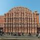

| The Taj Mahal is an ivory-white marble mausoleum on the south bank of the Yamuna river in the Indian city of Agra. It was commissioned in 1632 by the Mughal emperor, Shah Jahan, to house the tomb of his favorite wife, Mumtaz Mahal. |
| Humayun's tomb is the tomb of the Mughal Emperor Humayun in Delhi, India. The tomb was commissioned by Humayun's son Akbar in 1569-70, and designed by Mirak Mirza Ghiyas, a Persian architect chosen by Bega Begum. |
| Qutub Minar, at 72 meters, is the tallest brick minaret in the world. Qutub Minar, along with the ancient and medieval monuments surrounding it, form the Qutub Complex, which is a UNESCO World Heritage Site. |
| Sri Harmandir Sahib, also Sri Darbar Sahib and informally referred to as the "Golden Temple", is the holiest Gurdwara of Sikhism, located in the city of Amritsar, Punjab, India. Amritsar was founded in 1577 by the fourth Sikh guru, Guru Ram Das. |
| Amer Fort is located in Amer, a town with an area of 4 square kilometres located 11 kilometres from Jaipur, Rajasthan state, India. Located high on a hill, it is the principal tourist attraction in the Jaipur area. |
| City Palace, Jaipur, which includes the Chandra Mahal and Mubarak Mahal palaces and other buildings, is a palace complex in Jaipur, the capital of the Rajasthan state, India. |
| Akshardham or Swaminarayan Akshardham complex is a Hindu mandir, and a spiritual-cultural campus in New Delhi, India. |
|  | Hawa Mahal is a palace in Jaipur, India, so named because it was essentially a high screen wall built so the women of the royal household could observe street festivals while unseen from the outside. |
| Mehrangarh Fort, located in Jodhpur, Rajasthan, is one of the largest forts in India. Built around 1460 by Rao Jodha, the fort is situated 410 feet above the city and is enclosed by imposing thick walls. |
| The Red Fort was the residence of the Mughal emperor for nearly 200 years, until 1857. It is located in the centre of Delhi and houses a number of museums. |
| Agra Fort is the former imperial residence of the Mughal Dynasty located in Agra, India. It is also a UNESCO World Heritage site and is about 2.5 km northwest of its more famous sister monument, the Taj Mahal. |
| Brihadeshwara Temple is a Hindu temple dedicated to Shiva located in Thanjavur in the Indian state of Tamil Nadu. It is also known as RajaRajeswara Temple Rajarajeswaram and Brihadeshwara Temple. |
| Vaishno Devi, also known as Mata Rani, Trikuta and Vaishnavi, is a manifestation of the Hindu Mother Goddess Mahalakshmi. The words "maa" and "mata" are commonly used in India for "mother", and thus are often used in connection with Vaishno Devi. |
| Gurudwara Bangla Sahib; is one of the most prominent Sikh gurdwara, or Sikh house of worship, in Delhi, India and known for its association with the eighth Sikh Guru, Guru Har Krishan, as well as the pool inside its complex, known as the "Sarovar." |
| Jaisalmer Fort is one of the largest fortifications in the world. It is situated in the city of Jaisalmer, in the Indian state of Rajasthan. It is a World Heritage Site. |
| The Shree Siddhivinayak Ganapati Mandir is a Hindu temple dedicated to Lord Shri Ganesh. It is located in Prabhadevi, Mumbai, Maharashtra. |
| Golkonda, also known as Golconda or Golla konda, is a citadel and fort in Southern India and was the capital of the medieval sultanate of the Qutb Shahi dynasty, is situated 11 kilometres west of Hyderabad. |
| City Palace, Udaipur, is a palace complex in Udaipur, in the Indian state Rajasthan. It was built over a period of nearly 400 years being contributed by several kings of the dynasty, starting by the Maharana Udai Singh II as the capital of the Sisodia Rajput clan in 1553, after he moved from Chittor. It is located on the east bank of the Lake Pichola and has several palaces built within its complex. Udaipur was the historic capital of the former kingdom of Mewar in the Rajputana Agency and its last capital. |
| The India Gate, is a war memorial located astride the Rajpath, on the eastern edge of the ‘ceremonial axis’ of New Delhi, India, formerly called Kingsway. |
| The Gateway of India is a monument built during the 20th century in Mumbai City of Maharashtra state in Western India. It is located on the waterfront in the Apollo Bunder area in South Mumbai and overlooks the Arabian Sea. |
| Set in an 18th-century palace encompassing a Lake Pichola island, this luxury marble hotel once featured in a James Bond movie is a short boat ride from City Palace.
Featuring butler service, the opulent rooms offer lake and palace views, Wi-Fi and flat-screen TVs, as well as minibars, period furniture and turndown service. Suites add panoramic views and ceiling frescoes, and some have balconies or terraces. Rooms service is available 24/7.
The hotel features original art, ornate marble and glasswork throughout. Amenities include high-end restaurants and a full-service spa, fitness center & heated pool. Sunset cruises and yoga are offered. |
 | The Lotus Temple, located in New Delhi, India, is a Bahá'í House of Worship completed in 1986. Notable for its flowerlike shape, it serves as the Mother Temple of the Indian subcontinent and has become a prominent attraction in the city. |
| Lodhi Gardens is a city park situated in New Delhi, India. Spread over 90 acres (360,000 m2), it contains, Mohammed Shah's Tomb, Tomb of Sikandar Lodi, Shisha Gumbad and Bara Gumbad, architectural works of the 15th century by Lodhis- who ruled parts of northern India and Punjab and Khyber Pakhtunkhwa province of modern-day Pakistan, from 1451 to 1526. The site is now protected by the Archaeological Survey of India (ASI).
The gardens are situated between Khan Market and Safdarjung's Tomb on Lodhi Road and is a hotspot for morning walks for the Delhiites. |
 | The Jantar Mantar monument of Jaipur, Rajasthan is a collection of nineteen architectural astronomical instruments, built by the Rajput king Sawai Jai Singh, and completed in 1734 CE. |
| Jal Mahal is a palace located in the middle of the Man Sagar Lake in Jaipur city, the capital of the state of Rajasthan, India. The palace and the lake around it were renovated and enlarged in the 18th century by Maharaja Jai Singh II of Amber. |
| Lake Pichola, situated in Udaipur city in the Indian state of Rajasthan, is an artificial fresh water lake, created in the year 1362 AD, named after the nearby Picholi village. |
| The Charminar, constructed in 1591 CE, is a monument and mosque located in Hyderabad, Telangana, India. The landmark has become a global icon of Hyderabad, listed among the most recognized structures of India. |
| Jaigarh Fort is situated on the promontory called the Cheel ka Teela of the Aravalli range; it overlooks the Amber Fort and the Maota Lake, near Amber in Jaipur, Rajasthan, India. |
| The Rashtrapati Bhavan, "Presidential Residence" is the official home of the President of India, located in New Delhi, India. |
| Thekkady is the location of the Periyar National Park, which is an important tourist attraction in the Kerala state of India. |
 | Mysore is a historical place of karnataka . The Palace of Mysore is a historical palace in the city of Mysore in Karnataka, southern India. |
| Nathu La is a mountain pass in the Himalayas. It connects the Indian state of Sikkim with China's Tibet Autonomous Region. The pass, at 4,310 m above mean sea level, forms a part of an offshoot of the ancient Silk Road. |
| The Masjid-i Jahan-Numa, commonly known as the Jama Masjid of Delhi, is one of the largest mosques in India. |
| The Salar Jung Museum is an art museum located at Darushifa, on the southern bank of the Musi river in the city of Hyderabad, Telangana, India. It is one of the three National Museums of India. |
| Konark Sun Temple is a 13th-century AD Sun Temple at Konark in Odisha, India. It is believed that the temple was built by king Narasimhadeva I of Eastern Ganga Dynasty in 1255 AD. |
| Rohtang Pass, is a high mountain pass on the eastern Pir Panjal Range of the Himalayas around 51 km from Manali. It connects the Kullu Valley with the Lahaul and Spiti Valleys of Himachal Pradesh, India. |
 | Sanjay Gandhi National Park, previously Borivali National Park, is a large protected area in the northern part of Mumbai city in Maharashtra State in India. |
 | Elephanta caves are a network of sculpted caves located on Elephanta Island, or Gharapuri in Mumbai Harbour, 10 kilometres to the east of the city of Mumbai in the Indian state of Maharashtra. |
 | Valley of Flowers National Park is an Indian national park, located in West Himalaya, in the state of Uttarakhand and is known for its meadows of endemic alpine flowers and the variety of flora. |
| The Sundarbans is a natural region comprising southern Bangladesh and a small part in the Indian state of West Bengal. It is the largest single block of tidal halophytic mangrove forest in the world. |
| Keoladeo National Park or Keoladeo Ghana National Park formerly known as the Bharatpur Bird Sanctuary in Bharatpur, Rajasthan, India is a famous avifauna sanctuary that hosts thousands of birds, especially during the winter season. |
| Lalbagh or Lalbagh Botanical Gardens, meaning The Red Garden in English, is a well known botanical garden in southern Bangalore, India. |
| Kuduremukha is a mountain range and name of a peak located in Chikkamagaluru district, in Karnataka, India. |
 | The Ramoji Film City in India is located in Hyderabad. At 2000 acres, it is the largest integrated film city in the world. |
| Meenakshi Amman Temple is a historic Hindu temple located on the southern bank of the Vaigai River in the temple city of Madurai, Tamil Nadu, India. It is dedicated to Parvati, known as Meenakshi, and her consort, Shiva, here named Sundareswarar. |
| Chandni Chowk is one of the oldest and busiest markets in Old Delhi, India. Chandni Chowk is located close to Old Delhi Railway Station. The Red Fort monument is located within the market. |
| Solang Nala (Valley) derives its name from combination of words Solang (Nearby village) and Nullah (water stream). It is a side valley at the top of the Kullu Valley in Himachal Pradesh, India 14 km northwest of the resort town Manali on the way to Rohtang Pass, and is known for its summer and winter sport conditions. The sports most commonly offered are parachuting, paragliding, skating and zorbing. |